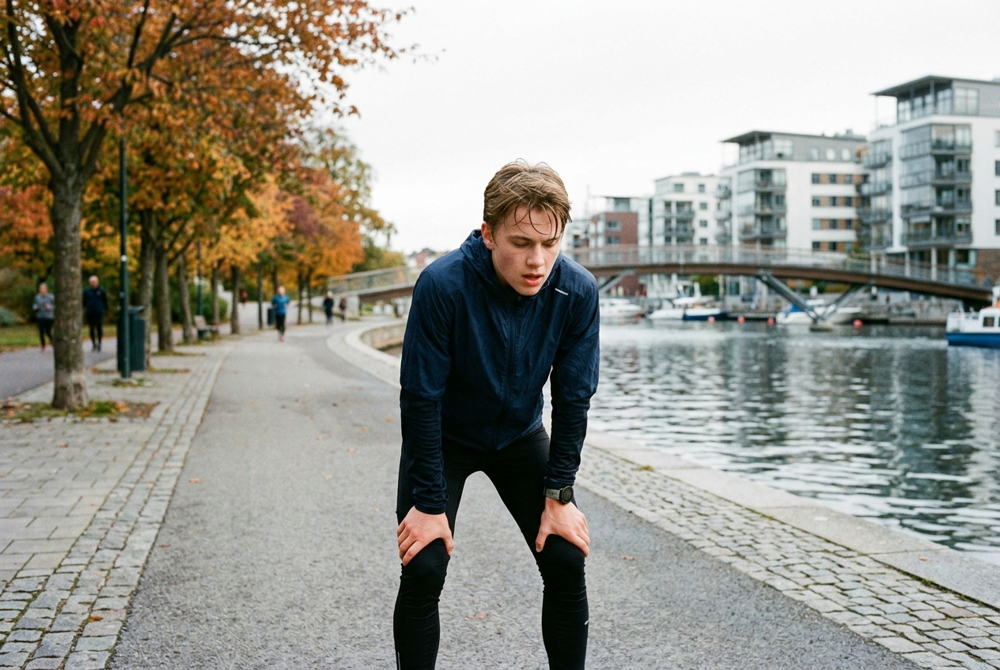

Kroppen, Träningen & Huvudet
Bygg en stark fysik utan toxisk gymhets. Förstå varför sömn är din största superkraft, hur du hanterar stress och var du vänder dig när du mår dåligt.
Styrketräning för nybörjare: Basövningar utan bullshit
Sociala medier svämmar över av extrema träningsrutiner, dyra piller och orealistiska kroppsideal. Sanningen är enkel: din kropp växer och blir stark av tre saker: progressiv överbelastning, riktig mat och återhämtning.
De 4 basövningarna du egentligen behöver:
- Knäböj (Squats): Bygger ben, bål och funktionell styrka.
- Marklyft (Deadlift): Stärker baksida lår, rygg och greppstyrka.
- Bänkpress / Armhävningar: Bröst, axlar och triceps.
- Rodd & Chins (Pull-ups): Övre rygg och armar, motverkar datarrygg.
💡 Tips: Sikta på 3 helkroppspass per vecka istället för att splitta muskelgrupper i 6 dagar. Det ger bättre resultat och mer tid över för livet.

Sömnens superkraft: Varför du vaknar trött
Om det fanns en laglig drog som ökade ditt minne med 20%, boostade din testosteronproduktion, brände fett och tog bort ångest – skulle alla ta den. Den heter sömn.
Mellan 15 och 18 år utvecklas hjärnans frontallob i rekordfart. Att sova 6 timmar per natt gör att din koncentrationsförmåga sjunker till samma nivå som om du vore berusad.
Kvällsrutinen som förändrar allt
- Ladda mobilen utanför räckhåll: Ha laddaren vid skrivbordet, inte bredvid kudden.
- Svalt sovrum: Hjärnan somnar snabbare om temperaturen ligger runt 18°C.
- Skriv ner morgondagens måsten: Om tankarna snurrar, töm huvudet på ett papper innan du släcker lampan.
När det känns för mycket i huvudet
Prestationsångest, ensamhet eller en känsla av att inte duga. Det är vanligare än du tror.
Dämpa inre krav
Ett 'C' på ett prov definierar inte ditt värde som människa. Arbetsgivare och vänner bryr sig om vem du är och vad du kan samarbeta kring, inte ett enskilt provresultat.
Prata med en kompis
Det krävs mod att säga: "Ärligt talat, jag mår inte så bra just nu." Du kommer nästan alltid upptäcka att den du pratar med känner liknande saker.
Rör på dig vid oro
Kropp och sinne hänger ihop. En rask promenad på 30 minuter rensar kortisol (stresshormon) snabbare ur blodet än att ligga kvar i sängen och scrolla.
Behöver du prata med någon just nu?
Du är aldrig ensam. Här är kostnadsfria, anonyma linjer bemannade av professionella kuratorer som lyssnar utan att döma.
För alla under 18 år. Ring eller chatta helt anonymt om vad som helst.
Ring gratis nuRåd om sex, kroppen, relationer och psykisk hälsa. Hitta din mottagning.
Besök UMOStödchatt driven av MÄN speciellt för killar och unga män mellan 10–25 år.
Öppna chatt